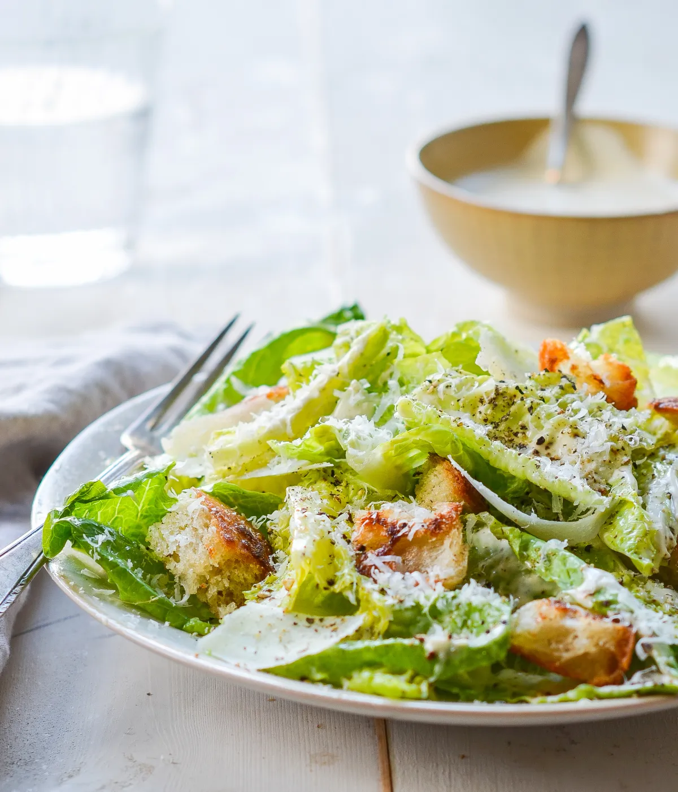

Ceasar Salad

History
The Caesar salad is often believed to have been created by Julius Caesar himself. But it wasn’t.
Caesar salad was invented in the early 1920s by Caesar Cardini, an Italian chef who owned a restaurant in Tijuana, Mexico.
He moved to Tijuana from California to avoid Prohibition, and it was here, on July 4th, 1924, where Caesar is believed to have invented the Caesar Salad.
According to his daughter, Rose Cardini, the restaurant was overrun with American customers.
Short on ingredients in the kitchen, her father assembled what was left: lettuce stalks, olive oil, raw egg, croutons, parmesan cheese and Worcestershire sauce.
Originally intended as finger food, the original Caesar salad recipe called for whole lettuce leaves, which were to be dipped in the dressing and then eaten with the fingers.
It was a hit.
Ingredients
- 1 large or 2 small heads of romaine lettuce
- Parmesan cheese, shredded or shaved
- Crisp croutons – homemade can be made several days ahead. The recipe below makes enough for 2 salads.
- Caesar salad dressing – homemade is best and here is our favorite store-bought dressing in a pinch
Steps